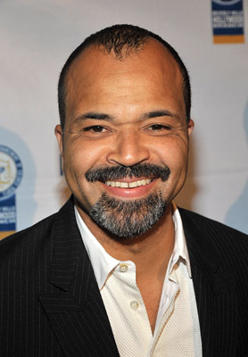
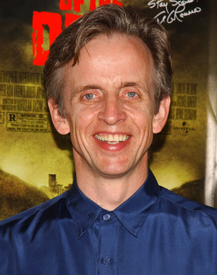
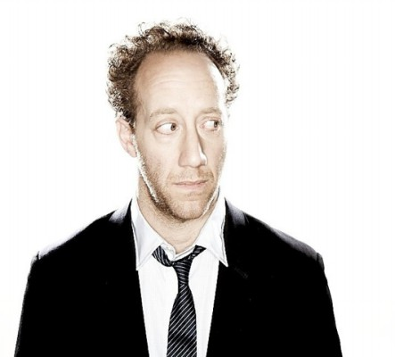
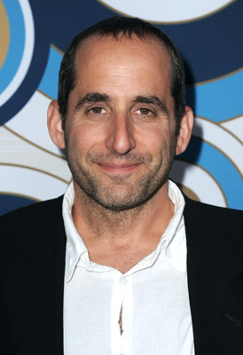

#12102 Der Distelfink
Alternativ: The Goldfinch (Englischer Titel)


 IMDB-Wertung: 6.3 / 10
IMDB-Wertung: 6.3 / 10  Tomatometer: 24
Tomatometer: 24  Metascore: 40
Metascore: 40 
Theodore "Theo" Decker war 13, als seine Mutter bei dem Bombenanschlag auf das Metropolitan Museum of Art ums Leben kam. Die Tragödie bestimmt seit jeher sein Leben und schickt ihn auf eine emotionale Reise voller Trauer und Schuldgefühle, Wiederfindung, Erlösung und sogar Liebe. Auf seiner Reise hilft ihm ein Andenken an den finsteren Tag... das Gemälde eines kleinen Vogels, angekettet an seine Sitzstange: "Der Distelfink".
Jahr: 2019
Dauer: 149 Minuten
FSK: 12
Land: USA Studio: Warner Bros.Tonspuren: DD5.1 - ,
Untertitel:
Auflösung: 1080p (1920x1040) Größe: 11878 MB
Genre: Drama
Regisseur: John Crowley
Drehbuch: Peter Straughan, Donna Tartt
Soundtrack: Trevor Gureckis
Darsteller:
- Oakes Fegley als Young Theo Decker
- Ansel Elgort als Adult Theo Decker
 Nicole Kidman als Mrs. Barbour
Nicole Kidman als Mrs. Barbour-  Jeffrey Wright als Hobie
 Luke Wilson als Larry
Luke Wilson als Larry- Sarah Paulson als Xandra
- Willa Fitzgerald als Adult Kitsey Barbour
- Aneurin Barnard als Adult Boris
- Finn Wolfhard als Young Boris
- Ashleigh Cummings als Adult Pippa
- Aimee Laurence als Young Pippa
-  Robert Joy als Welty
- Boyd Gaines als Mr. Barbour
- Carly Connors als Young Kitsey Barbour
- Luke Kleintank als Adult Platt Barbour
- Hailey Wist als Theo's Mother
- Ryan Foust als Young Andy Barbour
- Jack DiFalco als Young Platt Barbour
- Austin Weyant als Adult Toddy Barbour
- Collin Shea Schirrmacher als Young Toddy Barbour
- Denis O'Hare als Lucius Reeve
- Angela Cove als Female Social Worker
- Alton Fitzgerald White als Male Social Worker
-  Joey Slotnick als Dave (Theo's Psychiatrist)
- Dylan Boyd als Student
- Gordon Winarick als Adult Tom Cable
- Nicky Torchia als Young Tom Cable
- James Donahower als Mr. Beeman
- Don Castro als Detective #1
- Robert Turano als Detective #2
- Alma Cuervo als Store Owner
- Hank Rogerson als Vegas Teacher
- Ryan Katherine Stearns als First Student
- Tiana Youtzy als Second Student
-  Peter Jacobson als Mr. Silver
- Caroline Day als Em
- Kevin Owen McDonald als Boris' Father
- Karl Jacob als Man
- Raphael Corkhill als Barman
- Matteo van der Grijn als Gyuri
- Gerson Oratmangoen als Indonesian Man
- Bill Barberis als Martin
- Sandy Lopez als Janet
- Misha Osherovich als Shirley T
- Harry Smith als Everett
- Harry Adam als Student (uncredited)
- Anne-Marie Agbodji als Receptionist (uncredited)
- Phoebe Amirault als Middle School Student (uncredited)
- Rick Bolander als Paramedic (uncredited)
- Regina Byrne als Middle School Student (uncredited)
Datei: X:\2019(A-F)\Distelfink, Der (2019, FSK12, 1920x1040).mkv seit 05.12.2019
Festplatte: HD 2018(G-Z)-2019(A-Z)
 Es gibt insgesamt 60 Filme in der Gruppe '2019(A-F)'
Es gibt insgesamt 60 Filme in der Gruppe '2019(A-F)'